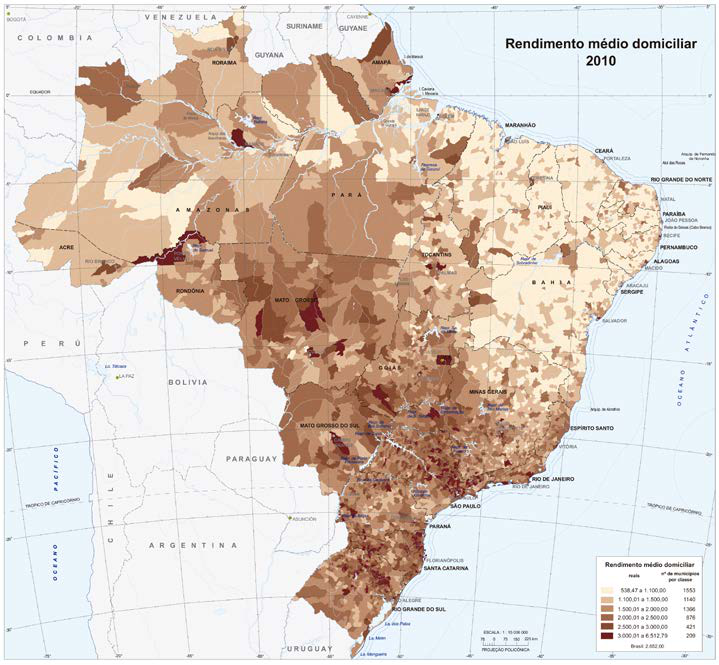
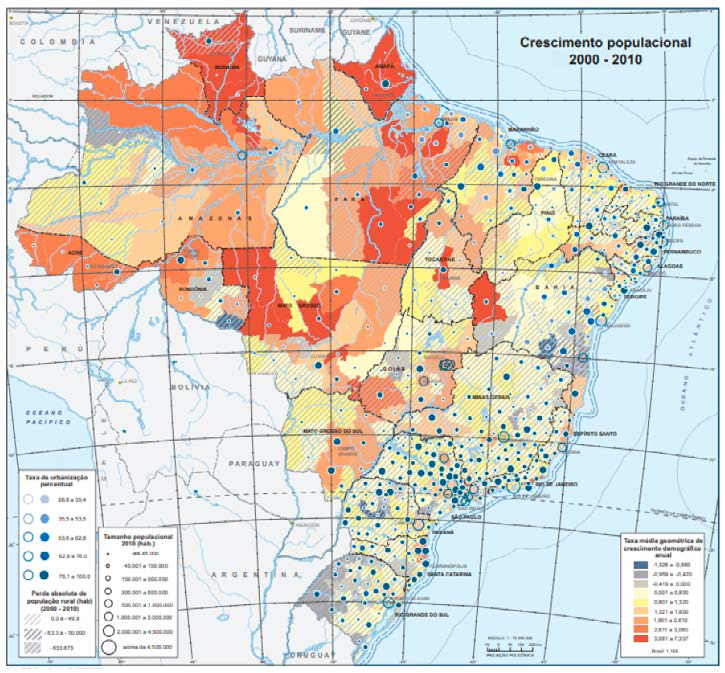

Módulo 3 | Aula 2
Noções básicas de Geoprocessamento e Sistema de Informações Geográficas
Funções e objetivos do SIG
Os Sistemas de Informações Geográficas permitem a realização de análises espaciais complexas por meio da rápida construção e modificação de cenários, oferecendo aos gestores subsídios essenciais para o planejamento e a tomada de decisões. Seu uso tem se ampliado significativamente em razão de diversos benefícios (Burrough, 1998):
- maior eficiência no armazenamento e na atualização das bases de dados;
- recuperação de informações de maneira mais ágil e organizada;
- produção de resultados com maior precisão;
- rapidez na comparação de alternativas e simulações;
- possibilidade de decisões mais rápidas e fundamentadas.
Os SIG disponibilizam um amplo conjunto de funcionalidades que, dependendo do projeto, podem atender a finalidades distintas. Entre seus principais objetivos, destacam‑se (Scholten & Stillwell, 1990):
- a organização e o georreferenciamento dos dados;
- a integração de informações provenientes de múltiplas fontes;
- a visualização estruturada das informações;
- análises espaciais em diferentes níveis de complexidade;
- a predição ou modelagem de ocorrências.
Vamos conhecer um pouco mais de cada um deles.
O SIG constitui um instrumento robusto para a organização e o gerenciamento de informações espacialmente referenciadas. No ambiente do SIG, é possível integrar diferentes tipos de dados, como limites de bairros, localização pontual de unidades de saúde, fluxos de pacientes e diversos outros temas permitindo sua visualização conjunta e de forma coerente no espaço geográfico.
O SIG é capaz de integrar informações oriundas de múltiplas fontes, em diferentes formatos, escalas e sistemas de projeção. Os mapas armazenados no sistema podem ser continuamente associados a novos conjuntos de dados, permitindo agregar informações produzidas por diferentes órgãos e instituições e ampliando a consistência das análises espaciais.
O SIG oferece ao usuário múltiplas possibilidades de apresentação dos dados, por meio da combinação de diferentes simbologias e técnicas de representação cartográfica, o que facilita a interpretação espacial. Nas figuras a seguir podemos ver diferentes tipos de representações cartográficas.
Figura 9: Mapa de rendimento médio domiciliar no Brasil - 2010

Este mapa temático apresenta a variável “renda média domiciliar”, representada por meio de diferentes classes de cor. Cada município é categorizado conforme a faixa de renda a que pertence.
Fonte: IBGE, Censo Demográfico 2000/2010. Disponível em: https://biblioteca.ibge.gov.br/visualizacao/livros/liv64529_cap8_pt1.pdf
Figura 10: Mapa de crescimento populacional do Brasil 2000 - 2010

Este mapa temático utiliza múltiplas simbologias para representar diferentes informações: (1) a taxa média geométrica de crescimento demográfico anual, apresentada por meio de classes de cor; (2) o percentual de urbanização, representado por círculos em tons de azul; e (3) o tamanho populacional, indicado por círculos pretos de diferentes dimensões.
Fonte: IBGE, Censo Demográfico 2000/2010. Disponível em: https://biblioteca.ibge.gov.br/visualizacao/livros/liv64529_cap3.pdf
Notas: 1) A taxa média geométrica de crescimento demográfico anual corresponde ao incremento médio anual da população entre 2000 e 2010. 2) Dados organizados por microrregião
Análise de dados: trata‑se da principal função de um SIG, pois permite realizar operações, extrair informações e gerar novos conhecimentos sobre o espaço geográfico a partir de critérios definidos pelo próprio usuário. Essa capacidade torna o SIG extremamente útil para o gerenciamento, o planejamento e a execução de projetos, independentemente do campo de aplicação.
Nas análises relacionadas especificamente aos componentes geográficos dos dados, destacam‑se as seguintes operações:
| Tipo de análise | Descrição | Exemplo de aplicação |
|---|---|---|
| Pontos no polígono | Identifica a interseção entre pontos e a área (polígono) em que eles se localizam | Identificar e quantificar casos de determinada doença nos bairros de um município |
| Linhas no polígono | Identifica a interseção entre linhas e a áreas (polígono) em que elas se cruzam | Identificar trechos de rio que cruzam determinados municípios |
| Áreas de Influência (buffer) | Construção de zonas de largura específica ao redor de pontos, linhas ou áreas. Utilizado para análise de proximidade | Definir áreas de exposição em torno de uma fonte de exposição, por exemplo uma indústria poluidora |
| Interpolação | Estimação de valores em locais não amostrados. Usado muito também para analisar concentração e densidade de pontos. Usualmente chamados de mapas de calor | Estimar áreas favoráveis à proliferação de vetores com base em armadilhas ou pontos de coleta. |
| Sobreposição (overlay) | Ela consiste em combinar duas ou mais camadas espaciais para gerar uma nova camada contendo a integração das informações. Pode auxiliar em um diagnóstico mais fiel em relação ao fenômeno estudado | Identificar áreas com baixa cobertura assistencial com a combinação de camadas contendo: distribuição da população, localização de unidades de saúde e rede viária. |
Predição de ocorrências: A partir da análise de séries históricas, o mapeamento dos eventos ao longo de diferentes períodos permite identificar em quais áreas ocorreram modificações, bem como a natureza dessas alterações. Em estudos conduzidos ao longo de extensos períodos de acompanhamento, torna‑se possível reconhecer tendências espaciais e antecipar como determinadas áreas podem se configurar nos anos subsequentes.